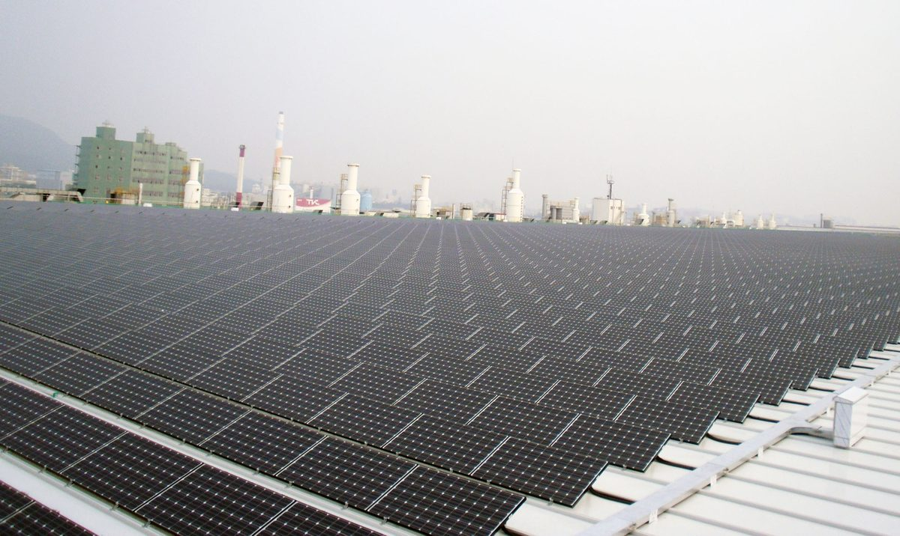

부산산단 지붕 태양광, 협약 두 달 지나도 실행 사업 없어

7,000억 원 민자 펀드 조성이 관건…대구 산단 사업도 펀딩 불발 뒤 재편
부산시가 2024년 6월 8개 기관과 협약한 380MW 규모 '부산산단 지붕형태양광 프로젝트'가 8월 23일 현재 실제 진행된 사업이 한 건도 없는 것으로 나타났다. 부산시는 펀드 투자 방안을 검토하고 있으며 10월쯤 구체적인 내용을 설명할 수 있다고 했고, 한 태양광 발전사업자는 참여업체 설득과 7,000억 원 펀드 조성 가능성부터 확인해야 한다고 지적했다. 대구는 2022년 3조 원 규모 산단 지붕 태양광 협약을 맺었다가 펀딩이 이뤄지지 않아 멈춘 뒤 시공 참여 기업 중심으로 재편해, 발전 계약 32개사 중 19개사에서 9.2MW를 가동하거나 공사 중이다. 부산 사업단 측은 산단과 공장의 가치를 높이는 방식으로 차별화를 준비하느라 시간이 걸렸으며 기업 미팅은 계속 잡혀 있다고 설명했다.
시민에너지 관점
380MW·7,000억 원 계획이 두 달째 실적 0건이고, 3조 원 규모였던 대구 사업은 재편 뒤 9.2MW를 가동하거나 짓고 있다. 큰 숫자의 협약이 곧 사업은 아니라는 점, 외부 대형 펀드에 기대는 구조는 돈이 모이지 않으면 통째로 멈출 수 있다는 점을 보여 준다. 반대로 지역 기업과 주민이 작은 단위로 지분과 자금을 쌓아 가는 방식은 속도는 느려도 멈추지 않는 길로 보인다. 협약 숫자보다 실제로 돌아가는 발전소 한 곳을 먼저 만드는 데 힘을 모아야 한다.
출처: 포인트경제 2024-08-23 설문승 원문 보기
釜山产业园屋顶太阳能：协议签署两个月后仍无实际项目
关键在于能否募集7,000亿韩元民间基金，大邱产业园项目也曾因融资落空而重组
釜山市2024年6月与8家机构签署协议的380MW规模“釜山产业园屋顶太阳能项目”，截至8月23日没有一个项目实际推进。釜山市表示正在研究基金投资方案，10月前后可说明具体内容；一位太阳能发电业者指出，应先确认能否说服参与企业以及募集7,000亿韩元基金的可能性。大邱2022年签署了3万亿韩元规模的产业园屋顶太阳能协议，因融资未果而停滞，之后以施工参与企业为中心重组，在签订发电合同的32家企业中，已有19家的9.2MW设备投入运行或正在施工。釜山项目团队表示，为准备以提升产业园和工厂价值为特色的方式而耗费了时间，与企业的会谈仍在持续。
市民能源视角
380MW、7,000亿韩元的计划两个月来实绩为零，而原本3万亿韩元规模的大邱项目在重组后正在运行或建设9.2MW。这说明大额协议并不等于项目，依赖外部大型基金的结构一旦资金募集不到，就可能整体停摆。相反，由地方企业和居民以小单位逐步积累股份和资金的方式，虽然速度慢，却似乎是不会中断的道路。与其追求协议数字，不如集中力量先建成一座真正运转的电站。
来源: Point经济 2024-08-23 Seol Mun-seung 查看原文
Busan industrial rooftop solar: no projects under way two months after the pact
Raising a 700 billion won private fund is the key; a Daegu industrial park project was also restructured after funding fell through
As of August 23, not a single project had actually moved forward under Busan's 380MW industrial park rooftop solar program, agreed with eight organizations in June 2024. The city said it was reviewing fund investment and could explain details around October, while a solar developer said the city should first check whether it can persuade participating firms and raise the 700 billion won fund. Daegu signed a 3 trillion won industrial rooftop solar pact in 2022 that stalled when funding failed; after regrouping around construction firms, 9.2MW is operating or being built at 19 of the 32 companies that signed power contracts. The Busan project team said it had taken time to prepare a distinct approach that raises the value of industrial parks and factories, and that meetings with companies were continuing.
Citizen Energy View
A 380MW, 700 billion won plan has delivered nothing in two months, while Daegu's once 3 trillion won project is now operating or building 9.2MW after restructuring. It shows that a large agreement is not a project, and that structures relying on big outside funds can stop entirely if the money does not come. By contrast, local firms and residents building up equity and capital in small units appears slower but less likely to stall. Effort should go first into getting one plant actually running rather than into the size of agreements.
Source: Point Economy 2024-08-23 Seol Mun-seung Read the original